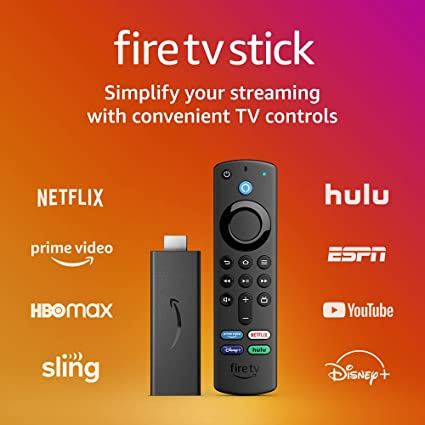

IPTV
IPTV also referred to as Internet Protocol Television is often delivered over a managed or dedicated network, like Digital Subscriber Line connectivity. Compared to the public internet, a private network gives network operators more control over the video traffic and, by extension, the ability to ensure quality of service, uptime, bandwidth and reliability.
Introduction
IPTVstands for Internet Protocol Television. It is a broadcasting service that provides multimedia content such as television/ video/ audio/ text/ graphics/ data using TCP/IP (Transmission Control Protocol/Internet Protocol) suite. This service mainly includes Live TV, Video on Demand (VOD). It is the modern alternative to broadcast TV, cable TV or satellite signals.
In traditional television, i.e., satellite and cable networks, the viewer is able to watch only those programs which are being broadcasted at that particular time. But using IPTV, the user can view any program saved in the service provider’s network at any time of their convenience.
WHAT ARE IPTV USED FOR
IPTV is a broadcasting and streaming service which, apart from regular features like live streaming, video on demand, interactive TV provides interactive features like in-streaming messaging, time shifting, program recording, i.e., ability to pause, forward or restart a live program which is in progress.
HOW IPTV WORKS
The IPTV is broadcasted over TCP/IP. TCP/IP are a set of rules or protocols which specifies how data is exchanged between devices. This suite of protocols specify how data is to be broken down, addressed, transmitted, routed and received. TCP defines how applications can create communication channels. It also specifies how should be broken down into packets before being transmitted across the internet and reassembled at the destination. Internet Protocol defines how to address and route each packet to ensure that it reaches the correct destination.
TCP/IP is designed for network reliability and auto recovery from failure. Network admins use it to establish device and network connectivity with little central management. It’s functionality divides into four layers:
1)Application layer: which provides applications with all standardized exchange,
2)Transport layer: which maintains end to end communications across the network with the TCP protocol,
3)Network layer: which manages packets and connects network to transport the packets across the network boundaries using IP and ICMP (Internet Control Message Protocol), and
4)Physical layer: which comprises protocols that only operate on a link, the component that connects nodes or hosts in a network.
TCP/IP is non-proprietary, and it can be easily modified. It is compatible with all types operating systems, hardware and networks and it is highly scalable.
Using TCP/IP suites, IPTV send one program at a time to the viewer, i.e., in a unicast format, unlike traditional television which broadcasts all programs at once, i.e., in multicasting format, and the user watches the program they want by changing the channels.
In IPTV, the content remains stored in the service provider’s network. The program which the end user wants to view is selected by them and only that program is sent to the user's device.
When a viewer changes the program, they select a different channel and a new stream is transmitted from the service provider's server directly to the viewer. Like cable television, IPTV requires a set-top box or other customer premises devices, such as a Wi-Fi router or a fibre optic or broadband internet connection.
IPTV primarily uses IP multicasting with Internet Group Management Protocol for IPv4-based live television broadcasts and Real-Time Streaming Protocol for on-demand programs. Multicast Listener Discovery is used on IPv6 networks. Other common protocols include Real-Time Messaging Protocol and Hypertext Transfer Protocol.

IPTV SERVICE PROVIDERS
We are no strangers to the different online streaming service providers such as Netflix, Amazon Prime, Hulu, Crunchyroll, etc. All these companies use IPTV to provide their services to their customers. One example that most of us are familiar with is YouTube. It is presently the largest video streaming platform. Some other examples of IPTV service providers are: Apple TV+, Disney+ Hotstar, IMDb TV, Popcornflix, Bing TV, Hoopla, Amazing TV, FalconTV, SelectTV, and many more.
Author: Rishav Brahma and Manish Roy